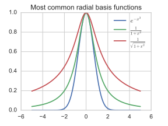
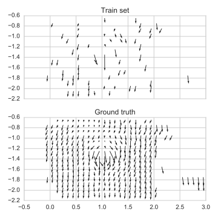
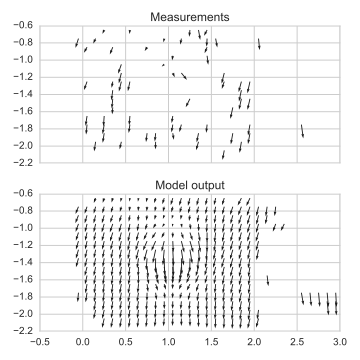
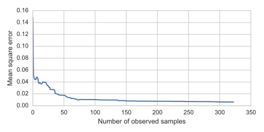

This report introduces one of my attempts at modelling the magnetic field of a room using a continuous representation. The first goal of this work is to assist the tracking of the orientation of a device by taking into account the multiple distortions of the field observed indoor: this is a step toward a positioning algorithm that takes advantage of these anomalies.
Maxwell's equations and the magnetic scalar potential
In order to be plausible, an approximation of the magnetic field should obey some properties well known by physicists. All electromagnetic phenomena are governed by Maxwell's equations, two of them involve the magnetic field:
$$ \nabla \cdot B = 0 $$
$$ \nabla \times B = \mu_0 \left(J + \epsilon_0 \frac{\partial E}{\partial t}\right) $$
where $B \in \mathbb{R}^3 \mapsto \mathbb{R}^3$ is the magnetic field, $\mu_0$ and $\epsilon_0$ are respectively the permeability and permittivity of vacuum, $J$ is the current density and $E$ the electric field.
The first of these two laws states that the magnetic field is divergence free, in other words, magnetic monopoles do not exist. We are assuming that there is no free current in the air and no time-dependent effects due to moving electric charges, thus the Ampère's circuital law reduces to:
$$ \nabla \times B = 0 $$
In these conditions, the magnetic field is then said to be irrotational. An irrotational vector field can be fully described as the gradient of a scalar field, called a scalar potential:
$$ B = - \nabla \psi $$
Thus, by modeling $\psi$ in place of $B$ directly, we are implicitly modeling a vector field that follows the second law.12 The first law will be added as a regularization in the optimization procedure.
Niklas Wahlström et al., "Modeling magnetic fields using Gaussian Processes", 2013 International Conference on Acoustics, Speech and Signal Processing (ICASSP)
Arno Solin et al., "Modeling and interpolation of the ambient magnetic field by Gaussian processes", arXiv:1509.04634
Differentiable interpolation
The map is represented by a set of anchor points $M = {(c_k, w_k) | k \in [1, K]}$, where $c_k$ is the position of the anchor in $\mathbb{R}^2$ and $w_k$ its associated value – a scalar potential in this case.
In order to have a model differentiable with respect to the position and the elements of the map $M$, the interpolation function is defined to be in the form:
$$ \psi(x) = \sum_{k=1}^K w_k \phi(x, c_k) $$
where $x \in \mathbb{R}^2$ is a point in space, $w_k$ the value of the map at the anchor $k$ located in position $c_k$, and $\phi \in (\mathbb{R}^2, \mathbb{R}^2) \mapsto \mathbb{R}$ is a differentiable radial basis function: it gives a weight to the anchors depending on their distance to the point $x$. In essence, this approach is similar to the attention mechanism in deep learning.3
With this definition of the scalar potential function $\psi$, the estimated magnetic field $B$ is:
$$ B(x) = \nabla_x \psi(x) = \sum_{k=1}^K w_k \nabla_x \phi(x, c_k) $$
We dropped the negative sign to simplify the equations even though this not standard among mathematicians and physicists, however the true value of the potential is of little interest to our application.Olah & Carter, "Attention and Augmented Recurrent Neural Networks", Distill, 2016. http://distill.pub/2016/augmented-rnns/
Radial basis functions
A radial basis function satisfies the property $\phi(x) = \phi(||x||)$: its value depends only on the distance from the origin – or another point called the center. Some commonly used RBF are shown below.

Learning the map parameters
Given a set of known points $S^\star = { (x_i^\star, y_i^\star) | i \in [1..N] }$ where $x_i^\star \in \mathbb{R}^2$ is a position in space and $y_i^\star \in \mathbb{R}^2$ the observed value of the $B$ field at this position, we are looking for a differentiable function $\psi \in \mathbb{R}^2 \mapsto \mathbb{R}$ that minimizes the loss
$$ L_\psi = \sum_{i=1}^N \delta(\nabla \psi(x_i^\star), y_i^\star) $$
where $\delta \in (\mathbb{R}^2, \mathbb{R}^2) \mapsto \mathbb{R}$ is a measurement of the error between the output of the model and the expected value.

A test case recorded using Optitrack cameras for pose estimation and a calibrated magnetometer. At the center of the scene lies a Sonos wireless speaker which induce a distortion of the magnetic field around it.
Stochastic gradient descent
Considering the parameters as $\theta = (w_1, \cdots, w_K, c_1, \cdots, c_K)^\top$. Minimizing the loss $\mathcal{L}_\psi$ using a stochastic gradient descent (SGD) comes down to updating the parameters iteratively using
$$ \theta \leftarrow \theta - \epsilon \nabla_\theta \delta(\nabla_x \psi(x^\star), y^\star) $$
where $\epsilon$ is a constant controlling the learning rate and $(x^\star, y^\star)$ is an element of $S^\star$ chosen at random. This is the simplest form of SGD, in practice there is many improvements to make it much more effective.
Implementation using a Kalman filter
We chose $\phi$ to be the form of a Gaussian function such that
$$ \phi(x, c_k) = e^{-\frac{||x - c_k||^2}{2 \sigma^2}} $$
where $\sigma$ is a hyperparameter related to the full width at half maximum – it gives the spread of the weighting. Its gradient w.r.t the position $x$ is
$$ \nabla_x \phi(x, c_k) = \frac{c_k - x}{\sigma^2} e^{-\frac{||x - c_k||^2}{2 \sigma^2}} $$
Therefore, we have
$$ B(x) = \sum_{k=1}^K w_k \nabla_x \phi(x, c_k) = \sum_{k=1}^K w_k \frac{c_k - x}{\sigma^2} e^{-\frac{||x - c_k||^2}{2 \sigma^2}} $$
By fixing the values of the $c_k$ – i.e. taking them as hyperparameters of the model – we can now express $B(x)$ as a linear function of the parameters we are trying to estimate (the weights $w_k$) such that:
$$ B = H \cdot w $$
where $H$ is the $3 \times K$ matrix
$$ H = \begin{bmatrix} \nabla_x \phi(x, c_1) & \cdots & \nabla_x \phi(x, c_K) \end{bmatrix} $$
and $w$ the column vector
$$ w = \begin{bmatrix} w_1 \ \vdots \ w_K \end{bmatrix} $$
When defined as a linear optimization problem, the quest for the most likely field potential fits in the (original) Kalman filter framework – which is, under some conditions, a well suited algorithm for real time estimation of unknown variables. In particular, we are making use of the update step of the algorithm during which observations are used to correct the estimation of the state of the system.
An update iteration of the estimated state $w$ and its covariance $P$ given a measurement $y$ goes as follow:
-
Compute the $H$ matrix for the current position $x$
-
Compute the residual $z$ between the true and estimated measurements, its covariance $S$ and the Kalman gain $K$ using
$$ \begin{aligned} z &= y - H w \ S &= R + H P H^\top \ K &= P H^\top S^{-1} \ \end{aligned} $$
-
Update the state $w$ and its covariance $P$ with
$$ \begin{aligned} w &\leftarrow w + K z \ P &\leftarrow (I - K H) P \end{aligned} $$
In our case, the measurement $y$ is the output of the magnetometer in $\mathbb{R}^3$ (transformed to take into account the orientation of the device). Thus, $S$ is in $\mathcal{M}^{3\times3}$ and its inverse is easy to compute.
Initial results
In the following experiment, we choose the $c_k$ such that the points are spread over a grid covering a least the area of interest with a resolution of 25cm. The model observes 60 samples taken at random from a ground truth made of 380 samples. In other words, the train set is made of $N = 60$ samples.
 Model output after one observation of each training sample.
Although the training data do not contain much information on the anomaly at the center of the scene, the model manages to estimate it quite accurately. Indeed, in the figure below we see that the model converges rapidly to its optimum after having seen only a few samples.

Model error evolution during training.
Future work
Regularization using the divergence
We used only one property of the magnetic field, the divergence-free property could be introduced in the system as a regularizer such that:
$$ \nabla \cdot B(x) = \nabla \cdot \nabla \psi(x) = \sum_{k=1}^K w_k \nabla_x \cdot \nabla_x \phi(x, c_k) $$
which can be rewritten using the scalar Laplacian:
$$ \nabla \cdot B(x) = \sum_{k=1}^K w_k \Delta_x \phi(x, c_k) $$
In a Kalman filter framework, this would come down to making an observation of the value of the divergence.